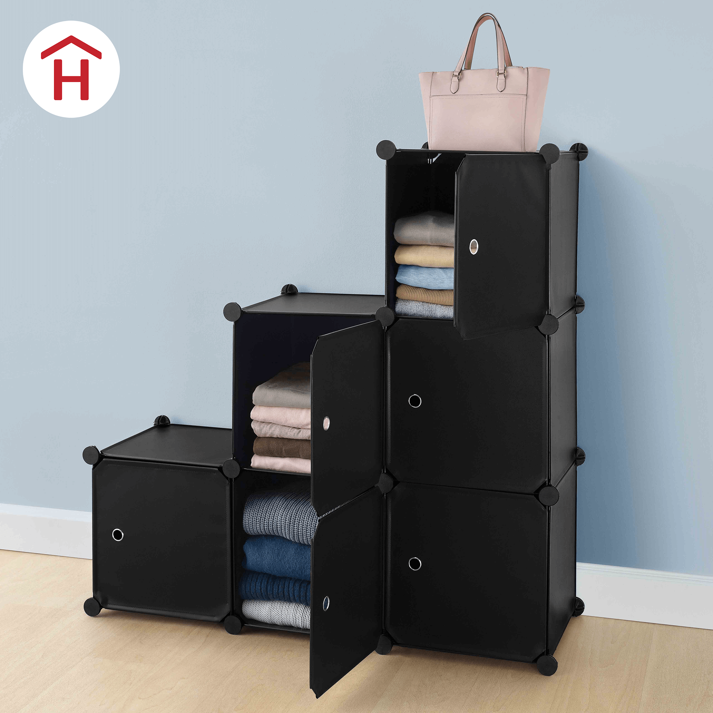
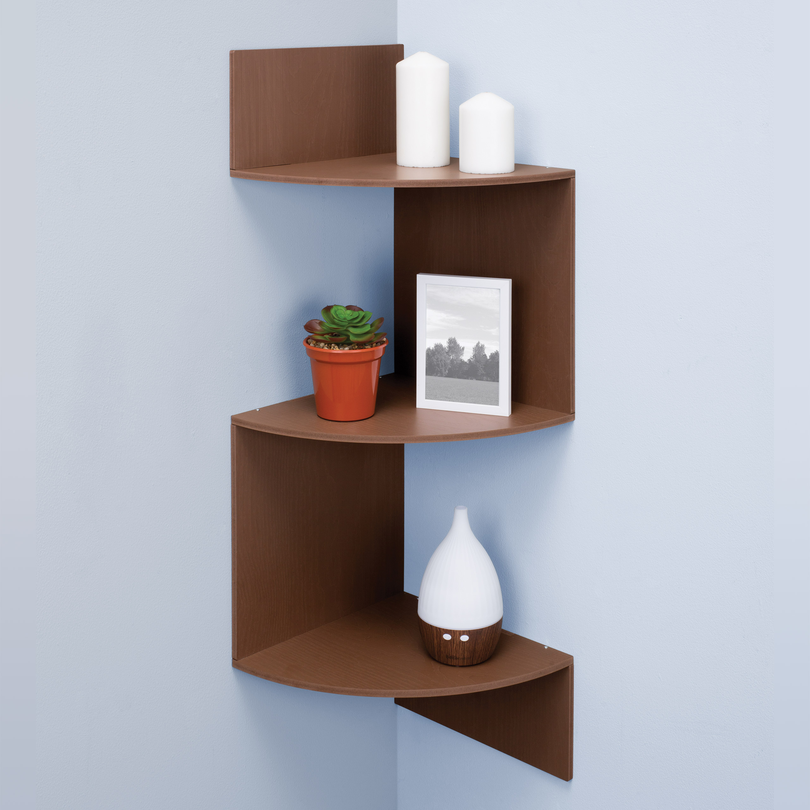

CUBOS MODULARES
Los modernos Cubos Modulares, además de funcionar para organizar y almacenar tu ropa, también sirven como zapatera armable, brindándote una capacidad de guardar hasta 6 pares en cada estante. Ahorra espacio con su función apilable para mantener el orden en casa y ¡acomódalos como tú quieras! Cada módulo cuenta con su propia tapa.
$ 799.00
FÁCIL MOP
Ya no te agaches ni te ensucies. Te garantizamos una máxima absorción y limpieza gracias a la microfibra del Fácil Mop, que es ideal para todo tipo de pisos. ¡La limpieza de tu hogar será más sencilla!
$ 519.00

ECO REPISA ESQUINERA
Crea espacios acogedores en cada rincón de tu hogar con la Eco Repisa Esquinera, perfecta para acomodar libros, portarretratos, adornos y más. Es de color chocolate, su textura es tipo madera y está hecha con material Eco Resist, por lo que es súper resistente al agua y no genera moho.
$ 429.00
DECO ESPEJOS
Dale un toque de estilo a cualquier espacio de tu hogar con Set Deco Espejos. Son 6 piezas para que las coloques juntas o en bien en varios espacios de tu hogar.
$ 109.00